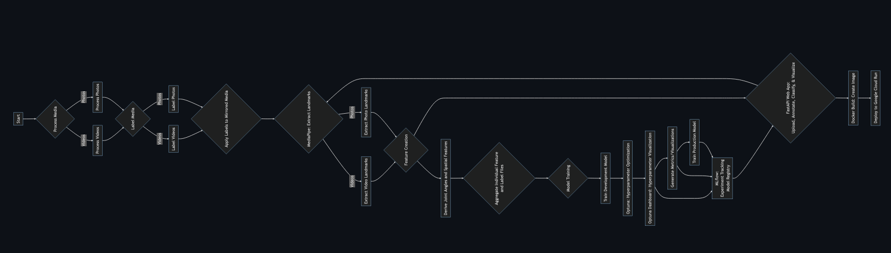
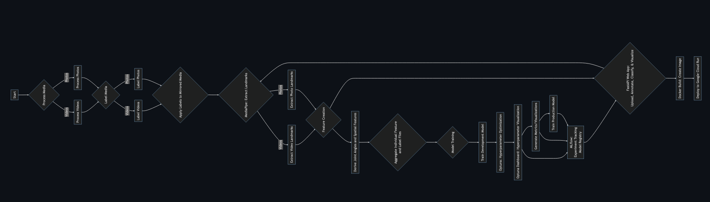

JS Data Science Consulting
Machine Learning ◆ Visualization ◆ Education
Machine Learning Solutions
Predict. Classify. Detect. Forecast.
Tailored machine learning solutions convert your data into definitive results
Supported by clear, well-documented code for ease of use and integration.
Interactive Visualizations
Explore. Discover. Communicate.
Interactive visualizations designed to explore and interpret complex data effortlessly.
Clear, clean, and intuitive design with communicative power.
Advanced Data Science Training
Question. Collaborate. Validate.
Advance your team’s data science proficiency, tailored for both analysts and management.
Bridge the gap between technical expertise and strategic application, empowering your team with the skills to apply advanced analytics for impactful business decisions.
Book a Consultation
Frequently Asked Questions
What kind of data science services do you offer?
I offer comprehensive data science services including data analysis, predictive modeling, machine learning, data visualization, and deployment of scalable data products.
How do you ensure the confidentiality of our data?
Your data's security and confidentiality are my top priorities. I employ strict data governance policies and use secure methods for data transfer and storage.
What industries do you specialize in?
While I am equipped to serve a variety of industries, my expertise is particularly strong in retail, manufacturing, healthcare, and aerospace, where I’ve delivered tailored data-driven solutions.
How can machine learning benefit my business?
Machine learning can uncover patterns and predictions that inform strategic decisions, streamline operations, improve customer experiences, and ultimately drive growth.
What is the typical timeline for a data science project?
Project timelines can vary widely based on complexity and scope. After an initial consultation, I will provide a detailed project timeline with key milestones and deliverables.
Can small businesses benefit from data science?
Definitely. Data science offers valuable insights that can help small businesses operate more efficiently, understand their customers better, and make data-driven decisions.
What sets you apart from other data science consultants?
My unique approach combines technical expertise with a deep understanding of business strategy, ensuring that solutions are not only statistically sound but also commercially viable.
Do I need to have a data science team in place to work with you?
No, I can work independently or alongside your existing team to complement and enhance your data science capabilities.
How do you approach a new data science project?
I start with a discovery phase to understand your business objectives, followed by data exploration, model development, and deployment, with a focus on actionable insights.
Are your solutions scalable as my business grows?
Absolutely. I design solutions with scalability in mind, ensuring they can evolve in line with your business growth and data complexity.
About John Slough II
After obtaining a Master's in Statistics from University College Dublin, I begain working in data science consulting. My six-plus years of consulting introduced me to working in many different industries.
My work ranged from constructing energy dashboards for a utility company to optimizing machine learning models to predict intra-flight aircraft landing times for NASA. I developed models predicting hotel occupancy rates for a hospitality company, and for a client consulting company I created an interactive dashboard that modeled their online meeting network traffic.
In addition to consulting, I worked directly for a cybersecurity company aiming to develop machine learning models to identify malware in network traffic.
Through it all, the cornerstone of my practice became clear communication, ensuring stakeholders grasp the necessary details to understand the solution's impact on their business.
Seeing a niche for agile, project-based data science expertise, I decided to establish my own practice. I cater to those in need of a skilled data scientist who adapts quickly, communicates effectively, and values simplicity over complexity in solution design.
My commitment for each project is to present outcomes as plainly and understandably as possible, whether it be a visual dashboard, a complex ML pipeline or a educational seminar.
I prioritize simplicity, clarity, and meaningful results for your business.
"It's essential that stakeholders understand the basics of machine learning and data visualization; this prompts beneficial dialogue and deepens insight into the technologies' business impact."
Based in Richmond, VA, I'm readily available for local clients and fully equipped to engage with partners worldwide.
Professional Data Science Services
I deliver end-to-end data science services, guiding projects from initial data wrangling to deploying robust applications. My expertise lies in transforming complex datasets into actionable insights and practical tools, and communicating results effectively.
Analyze Understand Simplify Implement
Core Offerings
- Machine Learning Solutions: Crafting predictive models and custom ML algorithms to turn data into definitive results, supported by clear, well-documented code.
- Interactive Visualizations: Designing intuitive visualizations and dashboards with tools like Plotly and Dash to make complex data understandable and actionable.
- Advanced Data Science Training: Training for professionals to deepen their understanding of ML and statistics, enabling them to question, collaborate, and validate ML and statistical solutions effectively.
- Statistical Analysis and Modeling: Performing deep statistical analysis to extract insights and inform strategy, complementing ML development.
- Data Strategy Consulting: Offering strategic guidance on data practices, helping businesses to set up and scale their data infrastructure and governance.
- Operationalization and Deployment: Implementing solutions in scalable environments using tools like AWS Sagemaker, GCR, and Docker, with tracking via MLflow for operational excellence.
- API and Automation Services: Developing APIs for seamless model integration and automating data workflows to enhance efficiency and consistency.
The Human Element in AI
"Let's just chatGPT it!"
AI and tools like ChatGPT are revolutionizing how we interact with data, the human element remains crucial. Understanding the nuances of your data, the context of your industry, and the strategic implications of analytical findings cannot be fully automated. One needs to know the right questions to ask and this begins with education. My role is to bridge that gap, ensuring that AI serves as a powerful assistant, not a replacement, in the art of decision-making.
Ready to enhance your business with data science that makes a difference? Reach out, and let's explore how we can turn your data into a strategic asset.
Portfolio
My portfolio showcases a selection of projects that demonstrate my expertise in data science, from innovative machine learning applications to interactive data visualization tools. Here's a glimpse into the work I've done:
Aerial Straps Pose Classifier
 

An application leveraging computer vision and machine learning to classify aerial straps poses. This project illustrates an ML project from conception to deployment. It features OpenCV, MediaPipe, Optuna, MLflow, fastAPI, Docker, and GCR. It's deployed with a user-friendly web app for real-time predictions.
Interactive Resume with Plotly Dash
An interactive resume created using Plotly Dash to dynamically present professional experience and skills through engaging visualizations.
Podcast Newsletter Processing and Summary Tool
A tool that automates the processing of podcast episodes, transcribing them, and generating summaries and highlight images, showcased through a Streamlit app.
NASA ATD-2 Machine Learning for Predicting Aircraft Landing Times
This project involved developing a machine learning model to improve the accuracy of predicting aircraft landing times, integrating the model with real-time operational data for air traffic management.
These projects highlight my versatility in data science, from analytical research to full-stack development, all with a singular goal: turning data into decisive action.